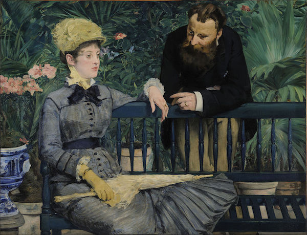
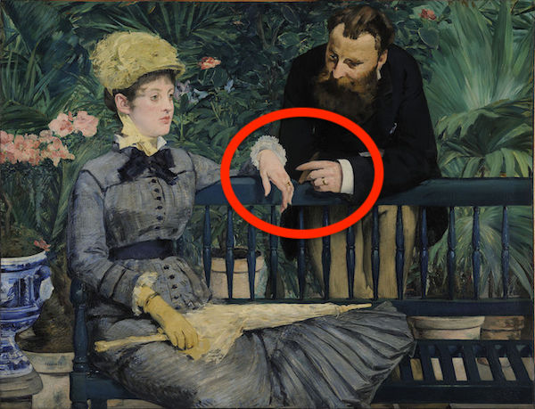

γραφὴ ζῶσα
Living Language in the Written Text
μάθημα τρεῖς, Lesson 3
μέρος Α, Part A

Copyright 2018 by Jonathan Robie (@bibhumanities) and Micheal Palmer (@grklinguist).
This work is licensed under a Creative Commons Attribution-ShareAlike 4.0 International License.
Γλῶσσα Ἑλληνικκή
- Language Study
- Read the Text: John 1:5
- Review
τέλοι τοῦ μαθήματος
Lesson objectives
- You will demonstrate understanding of questions asked in Greek.
- You will answer questions about the Greek text of John 1:1-5 by speaking in Greek.
- You will use genitive case forms:
| τίνος; | δι’ αὐτοῦ | χωρὶς αὐτοῦ | τὸ ὄνομά μου |
| τὸ ὄνομά σου | τὸ ὄνομα αὐτοῦ | τὸ ὄνομα αὐτῆς |
Ἐν ἀρχῇ ἦν ὁ λόγος, καὶ ὁ λόγος ἦν πρὸς τὸν θεόν, καὶ θεὸς ἦν ὁ λόγος. οὗτος ἦν ἐν ἀρχῇ πρὸς τὸν θεόν. πάντα δι’ αὐτοῦ ἐγένετο, καὶ χωρὶς αὐτοῦ ἐγένετο οὐδὲ ἕν. ὃ γέγονεν ἐν αὐτῷ ζωὴ ἦν, καὶ ἡ ζωὴ ἦν τὸ φῶς τῶν ἀνθρώπων·
👫 τίς ἦν πρὸς τὸν θεόν;
ὁ λόγος ἦν πρὸς τὸν θεόν.
👫 πρὸς τίνα ἦν ὁ λόγος;
ὁ λόγος ἦν πρὸς τὸν θεόν.
Ἐν ἀρχῇ ἦν ὁ λόγος, καὶ ὁ λόγος ἦν πρὸς τὸν θεόν, καὶ θεὸς ἦν ὁ λόγος. οὗτος ἦν ἐν ἀρχῇ πρὸς τὸν θεόν.
🕝 πότε ἦν ὁ λόγος πρὸς τὸν θεόν;
ὁ λόγος ἦν πρὸς τὸν θεόν ἐν ἀρχῇ.
🌍 ποῦ ἦν ὁ λόγος ἐν ἀρχῇ;
ὁ λόγος ἦν πρὸς τὸν θεόν ἐν ἀρχῇ.
Ἐν ἀρχῇ ἦν ὁ λόγος, καὶ ὁ λόγος ἦν πρὸς τὸν θεόν, καὶ θεὸς ἦν ὁ λόγος. οὗτος ἦν ἐν ἀρχῇ πρὸς τὸν θεόν. πάντα δι’ αὐτοῦ ἐγένετο, καὶ χωρὶς αὐτοῦ ἐγένετο οὐδὲ ἕν.
📦 τί ἐγένετο διὰ τοῦ λόγου;
πάντα ἐγένετο διὰ τοῦ λόγου.
πάντα δι’ αὐτοῦ ἐγένετο.
Ἐν ἀρχῇ ἦν ὁ λόγος, καὶ ὁ λόγος ἦν πρὸς τὸν θεόν, καὶ θεὸς ἦν ὁ λόγος. οὗτος ἦν ἐν ἀρχῇ πρὸς τὸν θεόν. πάντα δι’ αὐτοῦ ἐγένετο, καὶ χωρὶς αὐτοῦ ἐγένετο οὐδὲ ἕν.
📦 τί ἐγένετό χωρὶς αὐτοῦ;
οὐδὲ ἕν ἐγένετο χωρὶς αὐτοῦ.
χωρὶς αὐτοῦ ἐγένετο οὐδὲ ἕν.
Ἐν ἀρχῇ ἦν ὁ λόγος, καὶ ὁ λόγος ἦν πρὸς τὸν θεόν, καὶ θεὸς ἦν ὁ λόγος. οὗτος ἦν ἐν ἀρχῇ πρὸς τὸν θεόν. πάντα δι’ αὐτοῦ ἐγένετο, καὶ χωρὶς αὐτοῦ ἐγένετο οὐδὲ ἕν. ὃ γέγονεν ἐν αὐτῷ ζωὴ ἦν, καὶ ἡ ζωὴ ἦν τὸ φῶς τῶν ἀνθρώπων·
📦 τί ἦν ὃ γέγονεν ἐν τῷ λόγῳ;
ὃ γέγονεν ἐν αὐτῷ ζωὴ ἦν
📦 τί ἦν ἡ ζωὴ;
ἡ ζωὴ ἦν τὸ φῶς
Ἐν ἀρχῇ ἦν ὁ λόγος, καὶ ὁ λόγος ἦν πρὸς τὸν θεόν, καὶ θεὸς ἦν ὁ λόγος. οὗτος ἦν ἐν ἀρχῇ πρὸς τὸν θεόν. πάντα δι’ αὐτοῦ ἐγένετο, καὶ χωρὶς αὐτοῦ ἐγένετο οὐδὲ ἕν. ὃ γέγονεν ἐν αὐτῷ ζωὴ ἦν, καὶ ἡ ζωὴ ἦν τὸ φῶς τῶν ἀνθρώπων·
📦 τίνος ἦν τὸ φῶς;
ἦν τὸ φῶς τῶν ἀνθρώπων·
πάντα δι’ αὐτοῦ ἐγένετο

διὰ τίνος;
| 👨 δι’ αὐτοῦ | 👩 δι’ αὐτῆς |
👨 Ἰώαννης ... διὰ Ἰωάννου ... δι’ αὐτοῦ
👩 Μαρία ... διὰ Μαρίας ... δι’ αὐτῆς
χωρὶς αὐτοῦ
|
μετ’ αὐτοῦ
|
👨 χωρὶς αὐτοῦ
👩 χωρὶς αὐτῆς
Ἰώαννης ... χωρὶς Ἰωάννου ... χωρὶς αὐτοῦ
Μαρία ... χωρὶς Μαρίας ... χωρὶς αὐτῆς
👨 μετ’ αὐτοῦ
👩 μετ’ αὐτῆς
Ἰώαννης ... μετὰ Ἰωάννου ... μετ᾽ αὐτοῦ
Μαρία ... μετὰ Μαρίας ... μετ αὐτῆς
ἡ χείρ αὐτοῦ 👨
ἡ χείρ αὐτῆς 👩

ἡ χείρ αὐτοῦ 👨
ἡ χείρ αὐτῆς 👩

ἐγώ... ἡ χείρ μου
σύ ... ἡ χείρ σου
αὐτός ... ἡ χείρ αὐτοῦ
αὐτή ... ἡ χείρ αὐτῆς
τὸ ὄνομὰ μου
ἐγώ ... τὸ ὄνομά μου
σύ ... τὸ ὄνομά σου
αὐτός ... τὸ ὄνομά αὐτοῦ
αὐτή ... τὸ ὄνομα αὐτῆς
τίνος ὄνομα; ... τίς;
τὸ ὄνομά μου ... ἐγώ
τὸ ὄνομά σου ... σύ
τὸ ὄνομα αὐτοῦ ... αὐτός
τὸ ὄνομα αὐτῆς ... αὐτή
τίς; ... τίνος ὄνομα;
ἐγώ ... τὸ ὄνομά μου
σύ ... τὸ ὄνομά σου
αὐτός ... τὸ ὄνομα αὐτοῦ
αὐτή ... τὸ ὄνομα αὐτῆς
ἐγώ, σύ
| nominative | genitive | accusative |
| τίς; | διὰ τίνος; | πρὸς τίνα; |
|---|---|---|
| τί; | διὰ τίνος; | πρὸς τί; |
| ἐγώ | μου | με |
| σύ | σου | σε |
ὁ λόγος
| nominative | genitive | accusative |
| τίς; | διὰ τίνος; | πρὸς τίνα; |
|---|---|---|
| τί; | διὰ τίνος; | πρὸς τί; |
| ὁ λόγος | τοῦ λόγου | τὸν λόγον |
| αὐτός | αὐτοῦ | αὐτὸν |
τὸ φῶς
| nominative | genitive | accusative |
| τίς; | διὰ τίνος; | πρὸς τίνα; |
|---|---|---|
| τί; | διὰ τίνος; | πρὸς τί; |
| τὸ φῶς | τοῦ φωτός | τὸ φῶς |
| αὐτό | αὐτοῦ | αὐτό |
ἡ ἀρχή
| nominative | genitive | accusative |
| τίς; | διὰ τίνος; | πρὸς τίνα; |
|---|---|---|
| τί; | διὰ τίνος; | πρὸς τί; |
| ἡ ἀρχή | τῆς ἀρχῆς | τήν ἀρχήν |
| αὐτή | αὐτῆς | αὐτήν |